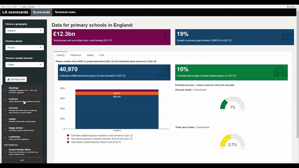

# Creat an interactive chart that we can output in an R Shiny application
library(ggplot2)
library(ggiraph)
chart_iris <- ggplot(iris) +
geom_point_interactive(
aes(
x=Petal.Length,
y=Petal.Width,
colour=Species,
tooltip=paste(Species,'\nWidth=',Petal.Width,'\nLength=',Petal.Length)
)
)Creating R Shiny dashboards
Guidance for publishing public statistics dashboards with R Shiny
Learning R Shiny
Shiny is an R package that makes it easy to build interactive web apps straight from R. You can host standalone apps on a webpage, embed them in R Markdown documents or build dashboards. You can also extend your Shiny apps with CSS themes, htmlwidgets, and JavaScript actions.
The guidance on this page assumes you have prior knowledge of R, if you are new to R, then take a look at our R resources page to get started.
For some initial inspiration, check out the Shiny gallery.
Tip
Just because something looks clever, doesn’t mean you should do it. Don’t over-complicate your user interface or the underlying code. Your priorities should be making something that meets user’s needs, whilst also creating something that’s manageable for whoever follows you in maintaining your dashboard.
Getting started with Shiny
There are a lot of resources already available to support you when working with R Shiny, if you’re new, then this blog post provides a gentle introduction.
If you like learning by reading / doing then the Posit Shiny-specific site has lots of resources that you can work through. Likewise Introduction section of Mastering Shiny is also a helpful resources.
If you like learning by watching then the Posit Youtube channel is also full of good resources.
Creating a user interface
Our template Shiny app repository is a useful starting point for all public facing dashboards in the department. Please see the dashboard template section for guidance on what the dashboard template includes and how to use it.
Shiny layouts gives a high level idea of how to structure an R Shiny app. Alongside this it is recommended you take a look at bslib which makes constructing beautiful user interfaces easy. This site is full of information on how to construct the page and how to work themeing.
Warning
Previously a lot of dashboards used shinydashboard - if starting afresh we recommend bslib instead. shinydashboard is uses an old version of bootstrap and has not been updated in many years. It shouldn’t immediately break but a risk nonetheless.
R Shiny Best Practice
Some key things you should include when building an app:
- Your code should follow the DfE Quality Assurance Framework
- You need to Accessibility Test regardless of internal or external deployment
- Your code should be tested
- Your file structure should be well-organised
- You should use dependency management
- If using databases with Shiny, you should use the pool package. You should also be conscious of SQL Injection which is where code could be maliciously used to attack a database backend - see SQL injection prevention for best practice
- Functions with Shiny make your life much easier
Leveling up your Shiny
Mastering Shiny is a really useful read, especially the Best Practice section.
There are a lot of packages out there to use. Always worth checking the features they bring are accessible and that they are from reliable sources i.e. from CRAN / somewhere you trust.
For more custom user interface:
- have a read of Outstanding User Interfaces with Shiny for how the web stuff works with Shiny
- for easy theme customisation Bootstrap Live Customiser
- for more context of the web bits, HTML, CSS and Bootstrap give a better understanding of what’s under the hood.
Caution
HTML, CSS and Bootstrap are a slippery slope into web development. Remember that if you’re working with Shiny then good analysis comes first!
For interactive maps, refer to this section on interactive maps.
For improving your tables, check out this section on data tables.
For more advanced Shiny knowledge it’s worth taking a look at the guide to engineering production-grade Shiny apps. It’s worth reading and considering how much to adopt, remember that just because it sounds clever doesn’t make it easy for other analysts to pick up. Read the Don’t sacrifice readability section and then work from there.
Support within the department
You should seek to make use of the community that is already out there, see what others are doing, ask them questions and for advice on any decisions or problems that you’re facing, and share what it is that you’re doing.
- The Statistics Development Team are experienced with R Shiny and happy to help or offer advice;
- The DfE R community on Teams is a place where you can post things you’ve learned or to ask for help;
- Going beyond DfE there’s a wealth of resources and communities online, including Stack Overflow discussions, cross government slack channels (e.g. #R and #Shiny on govdatascience.slack.com) and even tweets about R Shiny on twitter.
DfE styling and the DfE R Shiny template
Our template shiny app repository should be used a starting point for all public facing dashboards as it gives a consistent set up for publishing and provides template code for common parts. You can start your own repository using the ‘Use this template’ green button on the template repository. You will need a GitHub account to do this. If you are unsure or need help, contact the Statistics Development team who will be able to walk you through this.
What’s in the template
The template provides code for a basic interactive dashboard, with an example line chart using drop-downs for education level and geographic levels. It also includes an example accessibility statement (this is a requirement for all public dashboards and must be filled in, see the Accessibility and Accessibility testing sections), and a ‘Support and feedback’ page with suggested contact information and links.
View the latest version of the template dashboard.
By using the official DfE R Shiny template and the dfeshiny package (and keeping pace with updates), teams will be able to create a dashboard that conforms to a standard DfE styling.
All dashboards should have a link to the source code, and information about who to contact for feedback/issues. You should be familiar with and follow the gov.uk style guide as appropriate.
Consistency in R chart styling and colours
We recommend producing interactive charts using the ggplot2 package to create the basic plots, in combination with the ggiraph package to add any required interactivity. Any ggplot2 chart type can be converted to being interactive using ggiraph by adding _interactive on to the plot type function call as illustrated with geom_point() below:
Which produces the following chart with tooltips appearing when the user hovers over any given data point:
To render this within a Shiny application, we would then need to add the following lines to the ui.R and server.R files respectively:
# Code to place ggiraph in ui.R
girafeOutput("my_ggiraph_chart")# Code to render ggiraph in server.R
my_ggiraph_chart <- renderGirafe(chart_iris)For chart colours, teams should use the GSS colour palettes as outlined in the Anlytical Function data visualisation guidance. These are based on the gov.uk design system colours (described in the next section), but are optimised for charts to help with contrast and variations of colour blindness and are the colours used as default in the explore education statistics service.
Charts using ggplot2 can take custom palettes using the scale_fill_manual() function, e.g. below:
# Create colour palette using recommended colours (based on gov.uk design system)
library(ggplot2)
gss_colours <- c(
"#12436D", #`blue`
"#F46A25",#`orange`
"#801650",#`maroon`
"#28A197" #`turquoise`
)
# Create chart using palette
ggplot(
mtcars,
aes(
x=gear,
fill = factor(cyl)
)
) +
labs(x = 'Gears', fill = 'Cylinders') +
geom_bar(stat='count') +
scale_fill_manual(values = gss_colours) +
theme_classic()Further examples are given on the Using explore education statistics guidance page.
Use of colour outside of charts
In terms of colour choices beyond charts, teams should pick from the gov.uk design system colours when creating dashboards. Colours for the charts are pulled in using the afcolours package, which is based on the GSS colours guidance. These colours can be reused elsewhere if you need to match colours with those in the charts.
As with charts, be careful when choosing colours, and make sure that colours have sufficient contrast to be placed next to each other to meet WCAG AA standards using the colour contrast checker.
Hosting dashboard code on GitHub
Warning
Analysts should not use their own private GitHub accounts for the development of DfE dashboards.
All published dashboards should have their code hosted on the dfe-analytical-services project on GitHub, both for full public transparency and to enable automated approval-based deployments to the DfE publication platform. For the purposes of the internal-only review of dashboards under development, analysts may also benefit from a hosting code on the DfE Azure based DevOps platform. For both of the above, analysts should contact the explore education statistics platforms team.
Given the above, all analysts intending to create a dashboard should ensure they have a good working understanding of Git, GitHub and Azure DevOps. We strongly recommend our Tech Skills workshop on Git and Azure DevOps to either get you started or refresh your memory.
Warning
Be sure to read the guidance carefully, do not commit or push unpublished data to a GitHub repo before the day of the publication of the data. If you think you may have done this by accident, contact explore education statistics platforms team immediately with the full details of what has been uploaded to GitHub and when.
Publishing your dashboard
Public facing DfE Shiny applications are currently published via the DfE Analytical Services shinyapps.io account, with the authorisation and deployment of dashboards performed using GitHub.
Publishing new public dashboards
You need to alert the explore education statistics platforms team of any new dashboard publication as early in development as possible and keep us updated on the expected publication date so that we can review the dashboard against DfE standards and set up and support on the deployment to ShinyApps.io.
If you are publishing a new dashboard, or adding major updates to an existing one, you must:
- Obtain authorisation via email from the relevant G6 or DD and the statistics development team
- Forward authorisation emails to the explore education statistics platforms team
Updating existing dashboards
Please notify the explore education statistics platforms team of any planned data updates or significant functional updates at least 2 weeks before publication but preferably as soon as you know any updates are required.
The majority of dashboards made to support and augment our Official Statistics will be public facing. For public facing shiny apps you should publish via shinyapps.io. The explore education statistics platforms team manage a subscription for this and can help you get set up.
You will need:
- A finished app that meets the accessibility and styling standards (see our Dashboard procedure checklist)
- Code in the dfe-analytical-services GitHub repo
- Approval from your DD
- If the data underlying the dashboard is currently unpublished, you will need to create dummy data to use in GitHub until the data becomes published (see dummy data guidance section).
To set up a new app, send the above to explore education statistics platforms team. If your code is not yet hosted in the dfe-analytical-services GitHub area you can request for the repository to be moved at the same time as sending approvals.
Dashboard procedure checklist
This checklist outlines the standard procedure for teams who are wishing to produce a public R Shiny dashboard.
Getting set up:
- Create an account on GitHub
- Ask the explore education statistics platforms team to create you a repository in the DfE analytical services area, providing the name of the dashboard and the GitHub accounts of anyone who will be contributing to the code. You should aim to have two analysts working on the code development and a line manager for review purposes. Further colleagues with review responsibilities (policy colleagues, G6 and above, etc.) can be given access to a demo-site, rather than the repository.
- Clone the repo to your device so you can develop your code. Open the repo page in GitHub, click the green ‘Code’ button, and copy the URL it provides. Then, open R Studio on your device, click file > new project > version control > Git, paste the repository URL you copied from GitHub, give your local project area a name, and choose where to save it (i.e. on your computer’s C: drive, outside of the OneDrive-synced folders).
Once you’re set up, there are certain parts of the code you need to update:
- In the global.R script, update all of the site URL’s and EES publication names to your own.
- In the ui.R script, update the tags$title(), the information in the meta_general(), and the secondary text in shinyGovstyle::header().
- Got to the .github > workflows folder, and open the deploy-shiny.yaml file. At the bottom, update the appName in rsconnect::deployApp() - this is what will appear in the URLs (i.e. must align with the links in global).
- Update the ‘Support and feedback’ tab (in R > standard_panels.R) with your teams information. We also recommend creating a feedback form for users of your dashboard, and adding a link to that on this page.
- Update the README.md file (you can do this easily directly in GitHub). This is the file that renders below your repo in GitHub for users to see.
- Begin adding your own dashboard content. If you copy and paste any parts of the code (i.e. to create new tabs) you must change all of the IDs so there are no repeated IDs in the UI, otherwise the app will run with no UI elements. You should add UI and unit tests as you develop your code as a form of automated QA (see our guidance on UI tests and guidance on unit tests).
You must contact the Statistics Development Team for the following:
- To add the shinyapps.io secret and token to your GitHub repo, therefore enabling the app to be hosted on shinyapps.io.
- To create an area for your team in Google Analytics, to track the user analytics of your dashboard.
Setting up a development / demo dashboard area:
- While developing your dashboard, you may want a private, demo-version to share with policy or senior colleagues for review and feedback. This version must use either published data or dummy data and can not use unpublished data, since this cannot be uploaded to GitHub until the day of publication (see our dummy data guidance for public dashboards).
- Ensure that prior to contacting the explore education statistics platforms team, you have updated all of the URL’s and other items listed above.
- You must contact the explore education statistics platforms team to add the shinyapps.io secret and token to your GitHub repo, therefore enabling the app to be hosted on shinyapps.io. Once this is done you will have a browser link you can use to access the dashboard. We can make this private such that there is a list of approved viewers who must log in to view the dashboard - please provide the email addresses of any colleagues who you wish to have access to the private version during development.
You must have done the following before a dashboard can be published (the explore education statistics platforms team must review and approve that these have been met):
- Accessibility testing the dashboard and updating the accessibility statement. The accessibility testing guidance later in this section outlines how teams can do this.
- You should test how your dashboard appears and performs on mobile devices. you can do this by opening your dashboard in chrome/edge, right clicking anywhere on the page and selecting ‘inspect’. you will then see a new panel on the right hand side of your screen. To see your dashboard how a mobile user would, click the mobile/tablet button (see the image below).

- Setting up UI and unit tests (UI tests are a part of the automated QA process and will run via GitHub actions each time you create a pull request). See our guidance on UI tests and guidance on unit tests.
- Performance testing your dashboard. See our guidance on performance testing.
- The underlying data for the dashboard must still be uploaded to EES in the tidy data format to be used in the table tool (check this using our data screener)
- Decide where you are going to provide the public the link to your dashboard. You can easily add a link to your EES publications. If you have a draft release that is going out on the same day as the dashboard, you can add the link into your EES draft while the shinyapps.io page is still private. This is because the link will not change when the dashboard is made public, the log-in screen will simply be removed.
Procedure for updating your R Shiny dashboard with new data, new functionality or both
As mentioned in the public dashboards section, a public dashboard should not be updated with unpublished data until the data is published. However, it is possible to clone the repo and run it locally with unpublished data for testing purposes (see our guidance on testing with unpublished data). This guidance applies to both adding real data to a dashboard that previously used dummy data, and to adding updated data to an existing dashboard.
Note that wherever possible dashboard development updates should be done separately from routine data updates.
3-4 weeks before publication / start of update work
- Contact the explore education statistics platforms team providing the following:
- brief outline of the planned changes
- a planned publication date and time for the dashboard
- the contact details of the lead developer
- the contact details of the lead reviewer
- the contact details of the approver (G6)
- ask us about a review & health check on your dashboard to make sure it’s up to date with standards and is in a state to successfully deploy
- Run an update of all R-packages used by the dashboard -
renv::update()- to check that everything works as expected- Once verified, merge this update into your main branch to update all packages on your live dashboard (this will help the publication deploy go quicker)
Adding functionality / styling code updates
- Create individual branches for specific improvements
- Create / update UI tests for any new / changed functionality / behaviour
- Merge these into a development branch or into your main branch as each work item is completed
Adding new data - at least 1 day prior to publication day
- Create a new update branch on GitHub (branching from the most up to date version of your dashboard - i.e. either the main branch or the development branch if you’ve been making new updates on a development branch) where you intend to place your data updates
- Create a Pull Request between the data update branch and main (or development if you wish to test on development first)
- Pull the new update branch into your local clone of the repo
- Add any new data and make the appropriate add / commits. Once the data has been added, don’t perform any pushes from this branch until publication time.
- Run the local tests and record new UI test results caused by the new data
On the day of publication:
- Push the new update branch created above (can be performed 30 mins prior to publication time)
- Verify all tests / checks pass on the pull request - fix if they don’t
- Get approval on GitHub Pull Request from appropriate reviewer (e.g. G7)
- Complete the pull request to trigger the deploy
- Note that completing a pull request into the main branch will be blocked until your PR is both approved and passes the automated tests
- Deploys usually take between 5-30mins, check the GitHub Actions logs for progress
- Test the functionality and data validity of the app once it’s deployed to the live site.
Detailed walkthrough of a data update
The following provides a more detailed description of how you would do the above steps technically in R-Studio and GitHub if you need a refresher.
(At least 1 day) Prior to publication
- Create a local branch which you will use to update the data. To do this open your local version of the repo, navigate to the Git window, ensure the current branch is main (see 1) as this is the code producing the current live version of the app. If you’re happy the current branch is main, then do a pull to ensure it is up-to-date (see 2). Then click the new branch button (see 3).

- Give your branch a descriptive name, for example, for a data update for publication on a given date, incorporate the date into the branch name (i.e. data_update_01Jan_2023). Click create.
- You can now add your unpublished data files to the data folder in your local copy of the repository (in the file explorer). If you have already added the data using .gitignore as described in the guidance on testing with unpublished data, you can now remove the file name from the .gitignore file. You can also remove any dummy data files or old data files from the folder.
- Now open the script that reads in data for your dashboard and edit the file paths to point at the new data files.
- run tidy_code() and run_tests_locally() (see guidance on UI tests). If changes are found when running the tests locally, make sure you look through these differences and understand them. If you are happy with the changes found in the tests (i.e. they are expected due to your updates), update the .json files. These are tested via GitHub actions every time you do a pull request, so you should always run them in advance of any pull request.
- You can run your app to test that it is working, but do not commit or push this branch yet.
Day of publication
- At 9:30 on publication day, commit and push the changes in your new branch to GitHub. This makes the data files publicly available via GitHub and so should not be done until 9:30 on the day of publication, however this step does not update the dashboard.
- On the GitHub repo, you should now see a prompt to open a pull request. You should do this, following the template, ticking the boxes to show you have completed tests locally as required and provide details of the changes (i.e. that you’ve updated to include the most recent data, including dates).
- As you have already completed tests locally (step 5), you do not have to wait for the tests to complete when you open the pull request, you can click to merge into main straight away. This should start the process of updating the data on the dashboard. You can view the progress and time taken to do this by opening the GitHub actions tab and looking at the shiny-deploy action. Once the shiny-deploy action is complete, the dashboard will have updated.
Dashboards and data
We don’t yet have a database server set up that can be accessed by public facing dashboards, though we are working to put this in place. In the meantime, there are a few alternative options for storing data that the dashboard can run off.
Store the data within the repo (e.g. CSV files in a /data folder). Note that only published data should be stored in a repo. If your working on a dashboard that uses unpublished data then please see the dummy data section for guidance.
Use Google sheets
Use Dropbox
If you are running an internal-only app then you can connect to our internal SQL servers, information on how to do this is in the R community teams area.
Storing data in the dashboard repository
Whilst not ideal, storing data in the dashboard repository is the current standard route to accessing data in DfE dashboards. As our systems mature, we will move away from this model and develop a more secure and optimal data storage and access process for dashboards.
Note that the maximum allowable file size for GitHub repositories is 50 MB. Therefore if you are planning on using data in files larger than this limit, you will need to either break the data into smaller files or compress your data files before adding them to your repository. These steps should be taken before performing any commits incorporating the data.
Preventing early release of unpublished data
Give our commitment to transparency and this using a public service for code hosting, storing data within your dashboard repository must be done with care. Anything that you push to your GitHub repository will immediately be sent to the GitHub servers based in the US and thus will be stored outside DfE infrastructure. Therefore you should only ever push already published data to your repository.
To help with proper recording of data files and prevent accidental uploads, we have implemented a set of commit hooks in the dashboard repositories that helps you track any data files you are using (and will prevent the upload of any untracked data files).
The datafiles_log.csv file is a record of all of the data files saved in the repo, and whether or not the data is published. You should log all data files here and accurately record whether the data is published, unpublished or reference data. Any data file that is present in your repository, but is not listed as being published, dummy or reference data will prevent you being able to complete commits.
If you see any of the following errors, it is because you are trying to commit a data file to the GitHub repo that hasn’t been recorded as published:
Error: data/test_data.csv is not recorded in datafiles_log.csv.
Error: data/test_data.csv is not logged as published or reference data in datafiles_log.csv and is not found in .gitignore.
Commit hooks run automatically whenever you try to commit changes, and prevent any unpublished data being uploaded to the GitHub repo (see the public dashboards and dummy data sections) by checking the datafiles_log.csv file.
If you would like to save an unpublished data file locally to test the dashboard you should use the .gitignore file to ensure Git ignores this file in your commits (see the testing with unpublished data guidance) and then list this file as unpublished in your datafiles_log.csv file.
Using dummy data
When creating a public dashboard, all code and data will be hosted in the dfe-analytical-services GitHub repo. This is a public repo, meaning anything stored in here is publicly available. Therefore if you are creating a dashboard with previously unpublished data, you should provide dummy data for the GitHub repo, and only add the real data on your publication date.
Your dummy data should:
- Use the exact same structure and variable names as your real data
- Use random values in place of real values (one example of how to do this is using the
rnorm()function) - Simulate the types of suppression, missing data or anomalies seen in your real data, to ensure the dashboard can account for these.
Testing with unpublished data
While you must use dummy data in your GitHub repo, it is understandable that we should test the dashboard works with the real data before it goes live.
This can be done using the .gitignore file alongside the datafiles_log.csv and commit hooks explained in the Stopping accidental data uploads guidance. You can view the example files our template repository.
The .gitignore file is a plain text file that tells Git to ignore specified files in commits and pushes to the repo. Therefore, the first step when wanting to test unpublished data in a dashboard is to add the unpublished data file names to the .gitignore file.
Adding the file name alone will ensure it is ignored no matter where in the project area you save it (i.e. in any folder). Once this is done, you can add your unpublished data file to your local area, run the app locally, and make edits/commits without uploading the data to Github.
This .GitIgnore guidance page has great guidance on how you can utilize wildcards to capture all the files you might want to ignore.
If you have any questions on this process, please contact the explore education statistics platforms team.
Secure variables
See our Git page for guidance on storing secure variables in repositories.
Internal only dashboards
It’s possible to publish dashboards that are only accessible to users within the DfE network. To do this you will need to publish via the department’s internal Posit Connect servers.
You will need:
- A finished app, in line with the guidance on this page
- The code to be in a Git repository in the dfe-gov-uk Azure DevOps space
To publish the app, you’ll need to set up a pipeline in Azure DevOps, guidance for how to do this can be found in the Posit Connect Guidance (internal DfE access only).
Access to applications on the Posit Connect servers is locked down by default, so once the pipeline is set up and you’ve deployed the app you’ll need to request for its access to be opened up by using an Posit Connect request on ServiceNow.
If you’re running the app from an internal database, you’ll need to contact the database owner to set up a local login, and then store those as variables against your specific app in rsconnect. You can raise a request to do this via ServiceNow and selecting ‘Change app variables’.
Databases with Shiny
Currently only internal dashboards can have connectivity to databases. Check out this data article from Posit on best practice - in particular you should look to use the pool package for database connections and be careful of SQL Injection.
When to load data
On Posit Connect (internal dashboards only), a process is started up when a user opens your application. The process loads everything in your global environment (pre-server). These environment variables are shared between users with up to 20 users sharing a process by default. This can massively save on computation time.
However, it might be more efficient for some of your data loading to be moved onto the server side. For example, let’s say we have a dashboard showing school-level information. Collecting into memory data for every school is inefficient if a user is only looking for one. In this instance, we might set up a lazy connection to a database and only load the data when the user requests it on the server side.
In the example below, we demonstrate two examples. unlazy_data is all being used so we load it into the environment to be shared between multiple users. lazy_school_table is being used by one school at a time so is probably more efficient to load in only one school than all schools.
# NOT RUN
if(FALSE){
# create a pool connection
connection <- pool::dbPool(...)
# unlazy data collected into memory BEFORE server
unlazy_data <- dplyr::tbl(connection, DBI::Id(...)) |>
collect()
# create a lazy connection to a database
lazy_school_table <- dplyr::tbl(connection, DBI::Id(...))
# tell shiny to close the connection when the app stops
shiny::onStop(function() poolClose(connection))
# an example ui to select a school
ui <- shiny::fluidPage(
shiny::selectInput(
inputId = "school"
),
shiny::tableOutput("all_schools"),
shiny::tableOutput("one_school")
)
# data collected into memory ON SERVER SIDE
server <- function(input, output, session){
school_level_data <- reactive({
lazy_school_table |>
filter(school_name == !!input$school) |>
collect()
})
# table showing all schools
output$all_schools <- renderTable({
unlazy_data
})
# table showing filtered school
output$one_school <- renderTable({
school_level_data()
})
}
}Using Google Analytics with R Shiny
If you’re planning to publish a dashboard, or to set up Google Analytics for a published dashboard, please contact the explore education statistics platforms team.
The template has a google_analytics.html file which is set up to track all basic metrics, plus the inputs from both drop-downs. To set this up with your own app you will need a new tracking tag (the long number in the gtag()) which the Statistics Development Team can provide you with. Please contact us in order to set this up.
If you are hosting your dashboard at multiple URLs (i.e. to cope with expected high traffic) then all URLs will be tracked using one tracking tag and analytics for all URLs will all appear as one in the same report.
Accessibility testing in R Shiny
To complement the general accessibility guidance provided on the dashboards page, we recommend also using the shinya11y package to look at accessibility across your dashboard. Simply install and load the package, then include use_tota11y() at the top of your UI script. This brings up an interface that helps you examine different accessibility aspects in your app, like colour contrast, alt-text and what screen readers will detect:

R Shiny dashboards should also be tested using Lighthouse and via manual checks as outlined on the general dashboards page.
One example of a dashboard for Official statistics that meets these regulations is the SCAP LA school places scorecards app. Their accessibility statement is clearly labelled, explains what checks have been carried out, what the known limitations are and the plans in place to fix them:

Code testing
For dashboards created in R Shiny, we strongly recommend a mix of unit tests and UI tests (integration), run using GitHub Actions for continuous integration (CI). All applications should have an appropriate level of test coverage before being published. More information and details on how to get started with this can be found in the testing R Shiny section below.
To ensure that they are reliable, dashboards should have an appropriate amount of automated tests before they can be published. We recommend using a mix of UI and unit tests, but the number and type of tests that you need to run will depend on the content of your application.
Further guidance on setting up testing can be found in the DfE good code practice guide. Also see our guidance on testing R code on the learning resources page.
UI Tests
User interface (UI) tests should be used for all apps. These tests should check that:
- Your app loads up correctly
- Content appears as expected when you switch between tabs
- Content updates as expected when you change inputs
Using shinytest2 for UI tests
The shinytest2 package (which supersedes shinytest) is a really easy way to create these tests on an R Shiny app. Simply load in the package and run shinytest2::record_test() to open up the testing environment to get started.
Each test should produce one “expected results” JSON file tracking the inputs and outputs used by your dashboard. You can check the naming of particular input and output elements within your app by holding CTRL and clicking on an element in the testing window.
An example of the use of shinytest2 on a DfE R Shiny app can be found in the KS4 Ready Reckoners tool. This has a variety of tests that check that the app functions as expected when different combinations of filters are selected.
For optimal readability, each test should be separated out by comments, clearly stating what is being tested. The testing uses the following functions to set inputs and record test results:
app$set_inputs()tells the UI test to select an input in the applicationapp$expect_values()tells the UI test which outputs to capture (i.e. which outputs you’d expect to change and want to test)

The expected outputs are saved in a _snaps/shinytest2 folder, and every time you run a UI test, the outputs will be compared to these expected snapshots.
An example of a basic shiny test to check that your app loads up correctly can be found in our shiny template repo.
Migrating from shinytest to shinytest2
Preparing for migration
As previously mentioned, the shinytest package has been superseded by the shinytest2 package. If you already have shinytest UI tests in place for your dashboard, there is a function available to migrate these tests for you so that you do not have to rewrite them all yourself.
The migration function will only work if specific line endings (also known as carriage returns) are used in your code. It will not be immediately obvious to you what kind of line endings your code uses as default. If you receive an error that looks like this, or any error that seems to be pointing at the blank space at the end of a line of code, then you may be having this issue:
Error in parse(text = test_text) : <text>:21:1: unexpected input
20: app$snapshot()
21:
^You can modify the type of line endings used in your test code by going to Tools > Global Options > Code inside RStudio. In the “Saving” tab, there is a drop down box called “Line Ending Conversion”. You need to change this to “Posix (LF)” as in the image below:

You will need to modify and save your pre-existing test script after changing your settings to get this to work (adding and deleting a letter or a space somewhere should do). Once you’ve saved your test script, go to Session > Restart R, and then re-run the shinytest2::migrate_from_shinytest(PATH_TO_APP) command. The migration should then be successful.
There is guidance on migrating to shinytest2 available. To complete the migration, run shinytest2::migrate_from_shinytest(PATH_TO_APP), making sure to include the full file path to where your project is saved, e.g. shinytest2::migrate_from_shinytest('C:/R projects/analysts-guide'). There are two ways to find the file path to your project:
- Use the getwd() function
- Find the file path in Windows Explorer. If you copy your file path from Windows Explorer, remember to change the
\to/otherwise you’ll encounter an error.
Completing migration
The migrate_from_shinytest function will search for your “tests” folder, and then look inside the folder for any scripts containing UI tests. A new testthat folder will be automatically created, containing the code that runs your tests, as well as the snapshots generated when your tests are run. Don’t panic if your old test script is deleted as part of the migration, this is supposed to happen! It is recommended that someone who was familiar with the original tests completes QA of the new tests to make sure that everything looks as expected.
Potential Issues
Chromote
Shinytest2 needs to connect to your local copy of either MS Edge or Google Chrome by running a chromote session. The following issues can occur when shinytest2 tries to connect to run a Chromote session:
- R can’t find Edge or Chrome / invalid path to chromote
- Failed to launch Chrome / Edge due to trying to run in old headless mode
Unit Tests
Unit tests should be used for apps that contain custom functions created from scratch, or that rely on existing functions being combined to interact in a certain way.
Unit testing checks, for a set of defined variables, that the output is always the same when you run your custom function/s. This ensures that if slight tweaks are made to your function, or functions within packages you are using are updated, that your custom function still works.
For example, our QA app has many custom functions that we create to screen files before upload to EES. We have a series of dummy files that we have created to either pass or fail certain tests. Unit tests are written to check that these files always pass or fail as expected.
Tests and deployment
Both UI and unit tests need to be added to your app’s deployment pipeline. This ensures that the app will not be published if any of the tests fail.
We recommend using Github Actions to deploy the latest code whenever a push to your master branch occurs - this ensures that the published version of your app stays up to date.
You should also use GitHub Actions to run the automated tests for your app, which we recommend are done on at least every pull request.
If you’ve started from our template repository then all of this will be mostly set up for you to tweak and expand on, but if you haven’t then you’ll need to add the yaml files from the .github/workflows folder to your repository.
GitHub actions are already well documented and their own guidance should be able to walk you through anything you need. That being said, if there’s anything else you’d like to see here let us know.
Dashboard performance
Performance profiling represents a chance to breakdown how different elements within your dashboard perform relative to each other. This consists of running through a set of actions on a local run of your dashboard and timing each one. A useful tool for performing these tests is profvis, which carries out all the timings and visualisation of the results for you, whilst all you have to do is run the app and step through the actions that you want to profile.
The basic steps are as follows.
With your dashboard repository open in RStudio, run the following commands from the R console
install.packages("profvis")
profvis(shiny::runApp())
Then go through a set of interactions in your dashboard (e.g. navigate to the dashboard page, step through changing the selected choices in each input field, switch between any different tabs and cycle through the relevant inputs again). Once you’ve performed a representative range of actions in the dashboard, close the window and go back to the RStudio window.
After several seconds (depending on the range of actions you performed), a visualisation will appear in the main RStudio editor window showing the results of the profiling.
The profvis results are shown in the flame profiling chart. The top half of the chart shows any processing time measurements above 10ms for each line of code. It can be useful to focus in on lines that have measured times above 10ms by selecting “Hide lines of code with zero time” from the options menu in the top right.

Lines with timings of greater than about 5-100ms may warrant further investigation to see if they warrant some optimization. Common routes to optimising code are:
- avoid any data processing in server.R, e.g. avoid using the summarise() function;
- use reactive() elements to minimise repeated calls of given functions;
- use memoise() to cache results of more intensive functions (e.g. ggplot) to minimise repeated calls.
The documentation for the profvis package can be found here: Profvis documentation
Whilst profvis can help identify any bottlenecks, this will ideally be complemented in the future by full load testing of dashboards, whereby the behaviour of dashboards under real-life high demand scenarios can be tested. However, this type of testing is unavailable whilst our applications are hosted on ShinyApps. We will offer support on load testing once we move dashboards on to our own server systems.